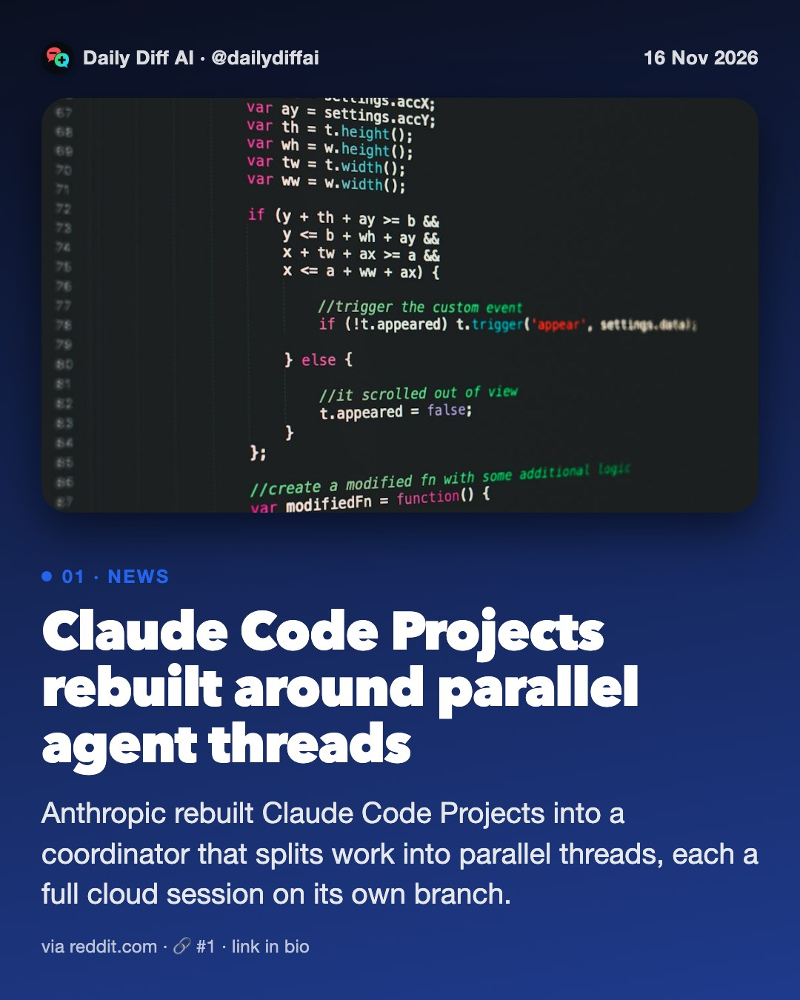
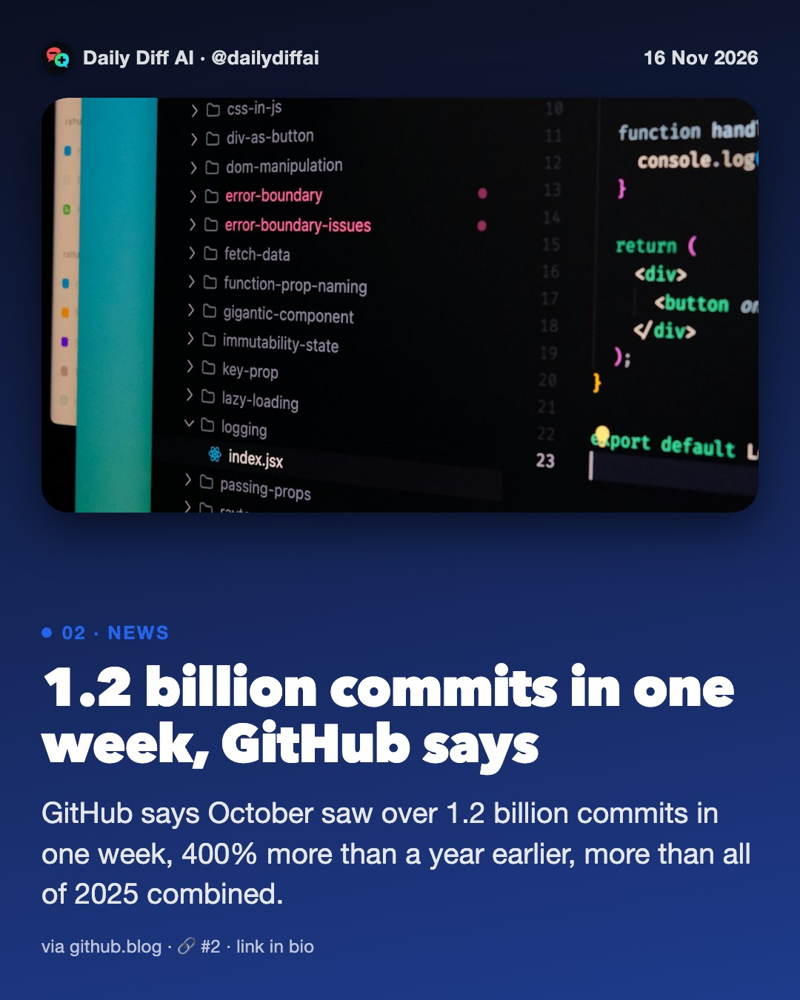
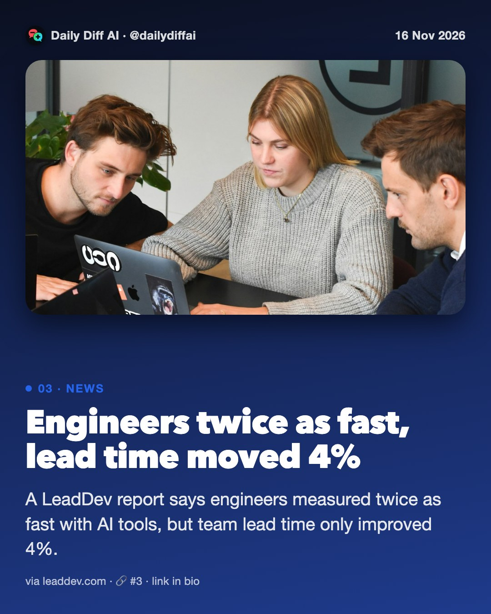
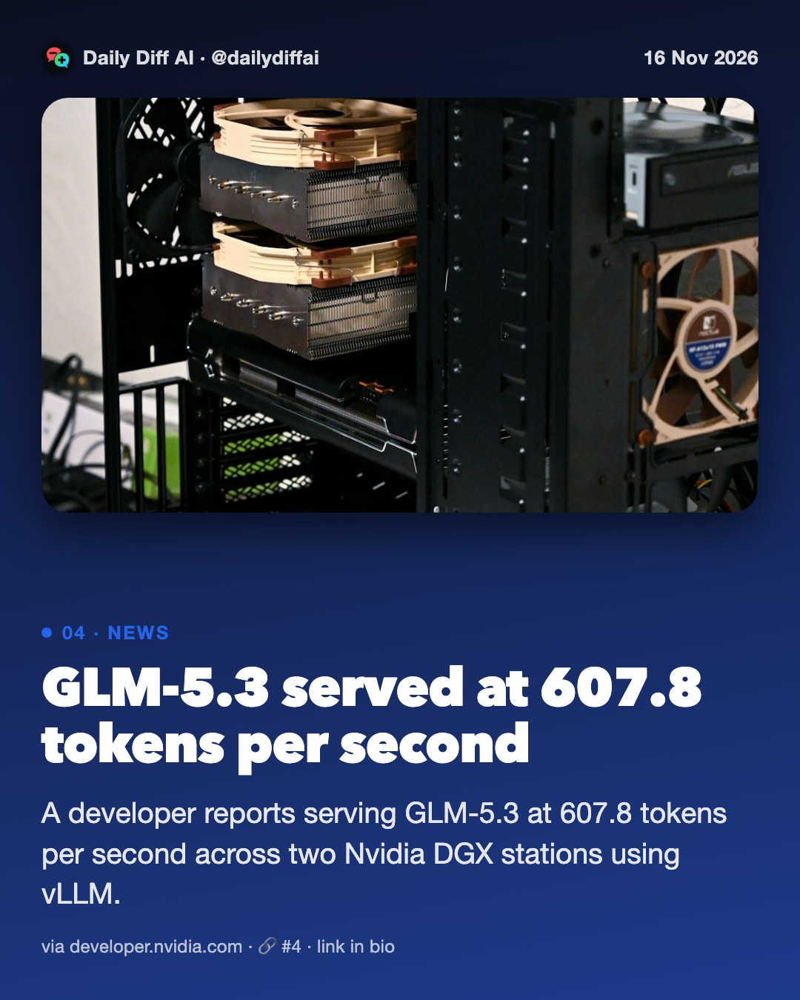
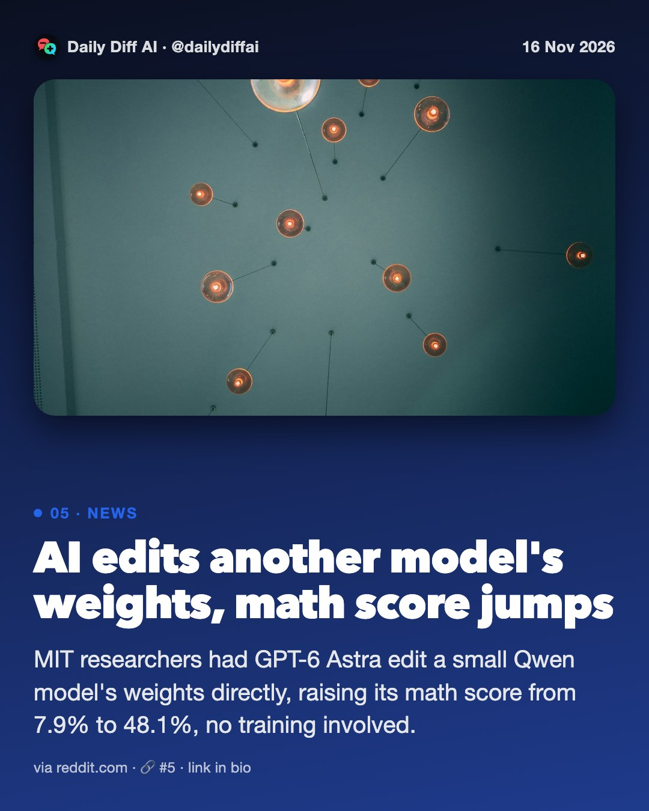
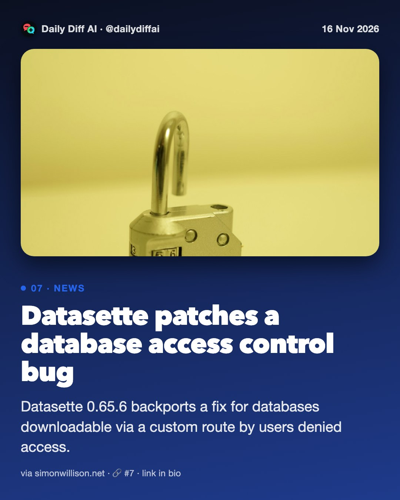
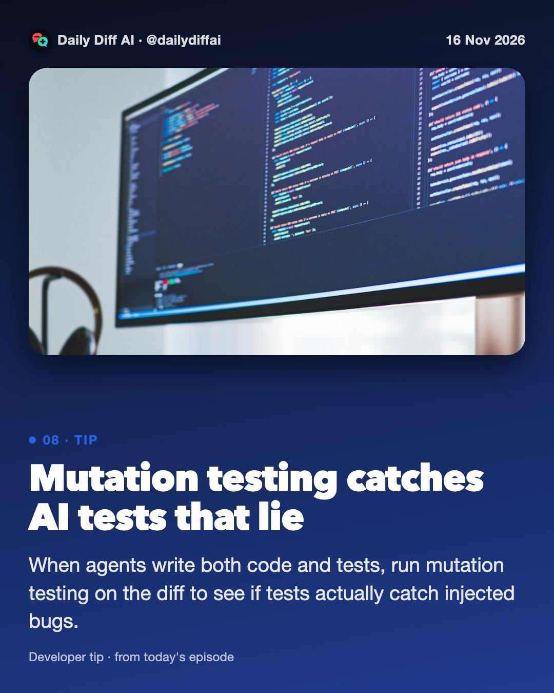

Daily Diff AI

Claude Code Projects rebuilt around parallel agent threads
Anthropic rebuilt Claude Code Projects into a coordinator that splits work into parallel threads, each a full cloud session on its own branch.
Read on reddit.com →
1.2 billion commits in one week, GitHub says
GitHub says October saw over 1.2 billion commits in one week, 400% more than a year earlier, more than all of 2025 combined.
Read on github.blog →
Engineers twice as fast, lead time moved 4%
A LeadDev report says engineers measured twice as fast with AI tools, but team lead time only improved 4%.
Read on leaddev.com →
GLM-5.3 served at 607.8 tokens per second
A developer reports serving GLM-5.3 at 607.8 tokens per second across two Nvidia DGX stations using vLLM.
Read on developer.nvidia.com →
AI edits another model's weights, math score jumps
MIT researchers had GPT-6 Astra edit a small Qwen model's weights directly, raising its math score from 7.9% to 48.1%, no training involved.
Read on reddit.com →Anthropic IPO reportedly 7 times oversubscribed
Bloomberg sources say Anthropic's IPO is about 7x oversubscribed, seeking up to $90.4B combined with a private placement.
Read on techmeme.com →
Datasette patches a database access control bug
Datasette 0.65.6 backports a fix for databases downloadable via a custom route by users denied access.
Read on simonwillison.net →
Mutation testing catches AI tests that lie
When agents write both code and tests, run mutation testing on the diff to see if tests actually catch injected bugs.

Alibaba's hybrid code review tool goes open source
Alibaba's open-code-review combines rule-based checks for injection and thread bugs with an LLM agent for line-level comments.
Read on github.com →